arhub
arhub
Cars: A feat in engineering...
Cars. Not appliances. Not “vehicles.” Not those soulless, CVT-infested pods designed to get you from A to B while you contemplate your life choices.
No—cars are mechanical symphonies. Controlled explosions. Carefully orchestrated violence wrapped in metal, rubber, and just enough leather to make you feel important.
Let’s begin with the heart of it all: the engine.
An engine isn’t just a lump of metal—it’s a living, breathing thing. You’ve got pistons firing up and down like caffeinated jackhammers, valves opening and closing with the precision of a Swiss watch, and fuel igniting thousands of times a minute. It’s chaos… refined. And depending on how many cylinders you have—four, six, eight, or if you’re feeling particularly irresponsible, twelve—the character changes completely.
A four-cylinder? Efficient, eager, slightly angry.
A straight-six? Smooth. Silky. Like it went to private school.
A V8? Oh, now we’re talking—loud, muscular, unapologetic. It doesn’t ask for attention. It demands it.
And then there’s forced induction—turbochargers and superchargers. Turbos are like caffeine: a bit of lag, then suddenly you’re wide awake and questioning your decisions. Superchargers? Immediate. Instant punch. Like getting slapped by torque the moment you touch the throttle.
Now, all that power is useless unless you can actually put it down. That’s where drivetrain comes in.
Front-wheel drive pulls you along like a dog dragging its owner. Safe, predictable… a bit boring.
Rear-wheel drive, however—that’s where things get interesting. Power goes to the back, the car pushes itself forward, and suddenly the rear end wants to have a conversation. If you’re skilled, it’s a dance. If you’re not, it’s a spin into a curb.
All-wheel drive? Grip for days. You point, it goes. Rain, dust, questionable life decisions—it handles it all.
Then we get to the gearbox.
Manual transmissions are the purest form of driving. Three pedals, one stick, and a direct connection between you and the machine. You’re not just driving—you’re operating. Timing shifts, balancing clutch and throttle—it’s mechanical conversation.
Automatics, on the other hand… well, they used to be lazy. Slushy. Like they couldn’t be bothered. But modern ones? Lightning fast. Dual-clutches that shift quicker than you can blink. Efficient, brutal, effective.
Still… they don’t make you feel like a hero the way a perfect manual shift does.
Now let’s talk handling.
Suspension is what keeps you alive when physics tries to kill you. Springs, dampers, anti-roll bars—all working together to keep the car planted. Too soft, and it wallows like a boat. Too stiff, and every bump feels like a personal attack.
Steering? That’s your connection. Hydraulic steering tells you everything—the road texture, the grip, the moment before things go wrong. Electric steering… well, sometimes it feels like playing a racing game with low battery.
And brakes—oh, brakes are underrated. Anyone can go fast. Stopping? That’s where the real engineering happens. Big discs, multi-piston calipers, heat management—it’s the difference between confidence and catastrophe.
But here’s the thing most people don’t get:
Cars aren’t just numbers.
0–100 times, horsepower figures, lap records—yes, they matter. But they’re not the soul. The soul is in how a car makes you feel.
It’s the way the engine note rises as you push through the rev range.
The way the chassis communicates mid-corner.
The slight fear when you realize you might be going a bit too fast—and the grin that follows.
A truly great car doesn’t just move you physically.
It rewires your brain. It sharpens your senses. It turns a simple drive into an event.
And that’s why gearheads don’t just “like” cars.
We obsess over them. We argue about them. We stay up at 2AM watching engine rebuilds and exhaust clips like it’s cinema.
Because at their best, cars aren’t machines.
They’re experiences.
Loud, flawed, ridiculous, beautiful experiences.
Toyota
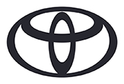
Now here’s a company that, on paper, sounds about as exciting as a microwave manual. Reliable. Sensible. Efficient. The kind of brand your uncle recommends while adjusting his sandals. But that… is only half the story. Because underneath that calm, almost boring exterior lies one of the most quietly brilliant automotive empires the world has ever seen. Let’s start with what Toyota does better than almost anyone: building things that simply refuse to die. Their philosophy—continuous improvement, or kaizen—means they don’t chase trends. They perfect systems. While other manufacturers are busy experimenting and occasionally setting themselves on fire, Toyota is in the background refining tolerances, simplifying designs, and stress-testing components like they’re preparing for the apocalypse. And the result? Engines that run forever. You’ll find old Corollas still going with mileage that would make other cars beg for retirement. Hilux bakkies that have been abused, drowned, set on fire, and somehow… still start. It’s not luck. It’s engineering discipline. But here’s where it gets interesting. Because every now and then, Toyota takes off the lab coat… and puts on a racing helmet. Let’s talk about their split personality. On one side, you’ve got the everyday machines—the Corollas, the Yaris, the Fortuners. Cars designed with surgical precision to do their job flawlessly. They don’t break. They don’t complain. They just… work. But then—out of nowhere—you get something like the Supra. A proper performance icon. Rear-wheel drive. Turbocharged straight-six. A car that doesn’t just move—it hunts. It’s the kind of machine that reminds you Toyota knows exactly how to have fun… they just choose not to most of the time. And then there’s the GR division—Gazoo Racing. Now this is where things get properly unhinged. GR Yaris? A rally-bred, all-wheel-drive pocket rocket that feels like it escaped from a special stage and somehow got license plates. GR Corolla? Same madness, just slightly more practical—which is like calling a chainsaw “versatile.” These aren’t cars built for spreadsheets. They’re built because someone at Toyota clearly said, “You know what? Let’s make something ridiculous.” And they did. But even when Toyota goes wild, they never abandon their core principle: durability. You can thrash these cars. Push them. Drive them hard. And they’ll take it. Because unlike some performance cars that feel like they’re one spirited drive away from financial ruin, a Toyota performance car feels like it’s ready for another round. Now let’s talk innovation. Toyota didn’t just dip a toe into hybrid technology—they cannonballed in. The Prius changed the game. While everyone else was still figuring out how to spell “hybrid,” Toyota was already mass-producing it, refining it, making it normal. Today, hybrid systems are everywhere—and Toyota is still leading the charge with efficiency that borders on absurd. They don’t scream about it. They don’t need to. They just build it better. And that’s the essence of Toyota. It’s not flashy. It doesn’t always shout for attention. In fact, most of the time, it actively avoids it. But when you look closer—when you understand the engineering, the philosophy, the quiet confidence—you realize something: Toyota isn’t boring. It’s calculated. It’s a company that knows exactly what it’s doing, whether it’s building a car that will outlive its owner… or a machine that will make you question your driving skills. And perhaps the most impressive part? They can do both. At the same time. Without breaking a sweat.Volkswagen
Volkswagen. Which, quite literally, means “the people’s car.” A humble name. Almost innocent. And yet, somehow, this is a company that has managed to be both brilliantly sensible… and deeply mischievous at the exact same time. Because Volkswagen doesn’t just build cars. It builds identities. Let’s start where it all began—the idea of simple, affordable mobility. Cars for everyone. Machines that are easy to live with, easy to drive, and engineered with that very specific German mindset: everything must feel solid. Not flashy. Not dramatic. Just… correct. Close the door on a Volkswagen, and you’ll hear it. That thunk. Not a slam. Not a rattle. A thunk. Like the car is quietly telling you, “Yes, I was built properly.” That’s their thing—refinement through understatement. Now, mechanically speaking, Volkswagen has always been clever. Take their engines, for example. Small displacement, turbocharged—TSI. On paper, they don’t look outrageous. But on the road? They punch well above their weight. Efficient when you want them to be, surprisingly eager when you don’t. And then there’s DSG. Ah yes, the dual-clutch gearbox. When it works, it’s magic. Lightning-fast shifts, crisp, immediate—like the car is reading your mind and executing your thoughts before you’ve fully had them. When it doesn’t work… well, let’s just say it develops a personality. But that’s part of the Volkswagen experience. It’s not just engineering—it’s character. Sometimes brilliant, occasionally confusing, always interesting. Now we move to what Volkswagen does better than almost anyone else: Hot hatches. The Golf. Specifically—the GTI. This is the blueprint. The gold standard. The car that took the idea of a sensible hatchback and injected just enough chaos to make it addictive. Front-wheel drive, yes—but balanced. Playful. Quick. It’s the kind of car you can drive every day… and then take on a back road and suddenly feel like a hero. And then, if that’s not enough, Volkswagen says: “Fine. You want more?” Enter the Golf R. All-wheel drive. More power. More grip. Less nonsense. It doesn’t play—it deploys. Point it, floor it, and it just goes. No drama. No theatrics. Just brutally effective speed. And that’s the difference. The GTI makes you feel fast. The R is fast. But Volkswagen’s reach goes far beyond just the Golf. This is a company sitting at the center of an empire—sharing platforms, engines, and technology across brands like Audi, Porsche, and even Lamborghini. Which means, sometimes, you’re driving a Volkswagen that secretly has DNA from machines far more expensive. And you can feel it. There’s a certain polish. A level of engineering depth that goes beyond what you’d expect at the price point. But—and this is important—Volkswagen isn’t perfect. They’ve had their moments. Questionable reliability here and there. Electronics that decide to have a day off. And of course… certain scandals that shook the industry. Yet somehow, they endure. Because when Volkswagen gets it right, they really get it right. They create cars that sit in that perfect middle ground—more premium than basic, more exciting than sensible, more refined than chaotic. They don’t scream for attention. They earn it. So what is Volkswagen, really? It’s balance. Between performance and practicality. Between innovation and tradition. Between being a car for everyone… and a car you actually want. And that’s why, despite everything—quirks, flaws, and all—Volkswagen remains one of the most important names in the automotive world. Because sometimes, the best cars aren’t the loudest ones. They’re the ones that quietly do everything… just a little bit better than expected.
Mercedes-Benz
Mercedes-Benz. Now this… is not just a car brand. This is automotive royalty. Because while everyone else was still figuring out what a car even was, Mercedes-Benz had already built one. Properly. The blueprint. The origin story. The moment the world went, “Ah… so that’s how this is done.” And ever since then, they’ve carried themselves with a certain… authority. Not arrogance—no, no. Something far more dangerous. Confidence. Let’s start with the fundamentals: engineering. Mercedes doesn’t just build cars. They over-engineer them. There’s a philosophy here that says, “If it works, make it better. If it’s strong, make it stronger. And if it seems unnecessary… include it anyway.” Which is why older Mercedes models feel like they were carved out of granite. Doors that shut like bank vaults. Interiors that age like fine leather jackets. Engines that don’t just run—they endure. These were cars built with the expectation that they’d outlive you. But then… something changed. Modern Mercedes didn’t abandon that philosophy—it refined it. Shifted it. Added layers of technology, luxury, and design that border on theatrical. Because now, stepping into a Mercedes isn’t just entering a car. It’s entering an environment. Ambient lighting glowing like a futuristic lounge. Screens stretching across the dashboard like you’ve just boarded a spaceship. Materials that feel expensive before you’ve even touched them. It’s not subtle. And that’s entirely the point. Now let’s talk about what really defines Mercedes: Comfort. No one—no one—does ride quality quite like this. You glide. You don’t drive—you waft. The suspension absorbs imperfections like they’re mere suggestions. Long distances feel shorter. Traffic feels less offensive. The entire experience is designed to isolate you from the chaos of the outside world. But don’t mistake comfort for weakness. Because Mercedes has another side. A darker, louder, slightly unhinged side. AMG. Now this is where things escalate. AMG takes everything Mercedes stands for—precision, refinement, engineering excellence—and then adds… aggression. Big engines. Loud exhausts. Power figures that make absolutely no sense for public roads. A standard Mercedes might whisper. An AMG announces. You start it up, and the entire neighborhood suddenly becomes aware of your existence. It crackles, it pops, it growls like it’s slightly offended you haven’t driven it harder yet. And the performance? Brutal. Effortless speed. Torque that hits like a punch to the chest. Cars that feel just as comfortable cruising at low speeds as they do absolutely devouring highways. It’s a strange duality. On one hand, you have calm, composed luxury. On the other, controlled chaos. And somehow… Mercedes makes both feel natural. Now, technology. Mercedes doesn’t follow trends—they introduce them. Safety systems, driver assistance, luxury features—things that start in a Mercedes often end up everywhere else a few years later. They push boundaries not just for performance, but for what a car can be. Sometimes it’s excessive. Sometimes it’s complicated. But it’s always forward-thinking. And that’s the essence of Mercedes-Benz. It’s not just about getting from A to B. It’s about how you feel while doing it. It’s about presence. The way the car carries itself. The way people notice—even if they don’t realize why. Because a Mercedes doesn’t need to prove anything. It already knows what it is. A statement. Of engineering. Of luxury. Of power held just beneath the surface… waiting for you to unleash it. And whether you choose to glide… or to roar… It will do both. Effortlessly.
Ford
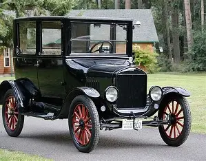
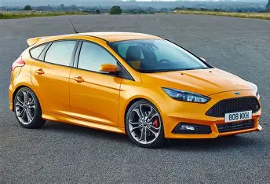
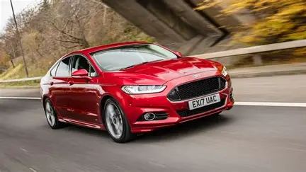

 Ford.
Now here’s a brand that doesn’t just build cars—it builds legends.
This is the company that put the world on wheels. Not in some polished, luxury, champagne-sipping way—but properly. Industrial. Raw. Henry Ford looked at the automobile and said, “Why should this be exclusive?” And then proceeded to mass-produce it like baked beans.
The Model T wasn’t glamorous. It wasn’t fast. But it changed everything.
And that spirit? It never really left.
Because Ford, at its core, is about accessibility with attitude.
Let’s talk about their personality.
Ford doesn’t try to be overly refined. It doesn’t chase perfection in the same way the Germans do. Instead, it leans into something far more exciting:
Character.
Their engines, for example.
You’ve got EcoBoost—small displacement, turbocharged, efficient. Sensible, yes. But still with a bit of punch, like it’s trying to prove it belongs in the fight.
And then… you get the other side.
The V8s.
Oh, the V8s.
This is where Ford stops being sensible and starts being loud. Naturally aspirated, big displacement, unapologetic engines that don’t care about subtlety. They roar. They shake. They make you feel like you should be doing something slightly illegal.
Which brings us to the Mustang.
Now this isn’t just a car—it’s a cultural event.
Long bonnet, short rear, rear-wheel drive, and an identity that screams freedom. It’s not about precision. It’s not about being the fastest thing around a corner.
It’s about how it makes you feel when you floor it in a straight line and the rear end starts asking questions you may not be qualified to answer.
It’s chaos. Glorious chaos.
But Ford isn’t just about muscle.
Hot hatches? Oh, they’ve been there too.
The Fiesta ST, the Focus ST, and the mighty Focus RS—cars that took everyday practicality and injected it with absolute madness. Sharp handling, playful chassis, engines that feel eager… like they’re always up for trouble.
And then—because Ford clearly doesn’t believe in doing things halfway—you get things like the Raptor.
A bakkie, yes. But not really.
It’s an off-road weapon disguised as something you could take to the shops. Massive suspension travel, aggressive stance, built to handle terrain that would make other vehicles reconsider their life choices.
Ford builds cars that want to be driven hard.
Not admired. Not tiptoed around.
Driven.
And that’s the key.
They’re not always the most refined. Not always the most reliable. But when you’re behind the wheel, there’s a sense that the car is alive—slightly rough around the edges, but full of energy.
Ford doesn’t aim for perfection.
It aims for fun.
And more often than not… it absolutely nails it.
Ford.
Now here’s a brand that doesn’t just build cars—it builds legends.
This is the company that put the world on wheels. Not in some polished, luxury, champagne-sipping way—but properly. Industrial. Raw. Henry Ford looked at the automobile and said, “Why should this be exclusive?” And then proceeded to mass-produce it like baked beans.
The Model T wasn’t glamorous. It wasn’t fast. But it changed everything.
And that spirit? It never really left.
Because Ford, at its core, is about accessibility with attitude.
Let’s talk about their personality.
Ford doesn’t try to be overly refined. It doesn’t chase perfection in the same way the Germans do. Instead, it leans into something far more exciting:
Character.
Their engines, for example.
You’ve got EcoBoost—small displacement, turbocharged, efficient. Sensible, yes. But still with a bit of punch, like it’s trying to prove it belongs in the fight.
And then… you get the other side.
The V8s.
Oh, the V8s.
This is where Ford stops being sensible and starts being loud. Naturally aspirated, big displacement, unapologetic engines that don’t care about subtlety. They roar. They shake. They make you feel like you should be doing something slightly illegal.
Which brings us to the Mustang.
Now this isn’t just a car—it’s a cultural event.
Long bonnet, short rear, rear-wheel drive, and an identity that screams freedom. It’s not about precision. It’s not about being the fastest thing around a corner.
It’s about how it makes you feel when you floor it in a straight line and the rear end starts asking questions you may not be qualified to answer.
It’s chaos. Glorious chaos.
But Ford isn’t just about muscle.
Hot hatches? Oh, they’ve been there too.
The Fiesta ST, the Focus ST, and the mighty Focus RS—cars that took everyday practicality and injected it with absolute madness. Sharp handling, playful chassis, engines that feel eager… like they’re always up for trouble.
And then—because Ford clearly doesn’t believe in doing things halfway—you get things like the Raptor.
A bakkie, yes. But not really.
It’s an off-road weapon disguised as something you could take to the shops. Massive suspension travel, aggressive stance, built to handle terrain that would make other vehicles reconsider their life choices.
Ford builds cars that want to be driven hard.
Not admired. Not tiptoed around.
Driven.
And that’s the key.
They’re not always the most refined. Not always the most reliable. But when you’re behind the wheel, there’s a sense that the car is alive—slightly rough around the edges, but full of energy.
Ford doesn’t aim for perfection.
It aims for fun.
And more often than not… it absolutely nails it.
Bayerische Motoren Werke
 BMW.
Ah… BMW.
The brand that doesn’t just build cars—it builds drivers.
Because while others focus on comfort, or reliability, or outright madness, BMW has always been obsessed with one thing:
The experience.
“Ultimate Driving Machine.”
Not a slogan.
A mission statement.
Let’s start with the fundamentals.
Balance.
BMW understands something many manufacturers forget—that speed is meaningless without control. Which is why, for decades, they’ve perfected the art of weight distribution. Near 50:50. Engine placed just right. Chassis tuned to respond like it’s reading your thoughts.
You don’t just sit in a BMW.
You connect with it.
Rear-wheel drive has always been their weapon of choice. Power sent to the back, steering at the front—clean, pure, proper driving dynamics. It means the car doesn’t just go where you point it.
It communicates.
You feel the road. The grip. The moment the rear starts to loosen just enough to make things interesting.
And when you get it right?
It’s magic.
Now, engines.
BMW doesn’t just make engines—they craft them.
Inline engines—especially the straight-six—are their signature. Smooth, responsive, perfectly balanced. It’s the kind of engine that doesn’t shout—it sings.
Turbocharged in modern form, yes, but still carrying that signature BMW character: linear power delivery, eager revving, always ready.
Then we step into M territory.
And this… is where things escalate quickly.
BMW M cars are not just faster versions of regular BMWs. They are transformed.
Sharper. Louder. More aggressive. Suspension tightened, engines tuned, everything dialed up until the car feels like it’s constantly on edge—in the best possible way.
An M car doesn’t relax.
It waits.
For you to push it.
And when you do, it delivers performance that feels precise, calculated, almost surgical. Where a muscle car might overwhelm you, an M car works with you. It rewards skill. It encourages confidence.
But BMW isn’t without its… quirks.
Modern designs? Controversial, to say the least. Grilles that seem to grow larger every year, as if they’re trying to inhale smaller cars.
Reliability? Let’s just say… maintenance is part of the ownership experience.
And yet—none of that really matters when you’re driving one properly.
Because in that moment, everything makes sense.
The steering, the balance, the way the car rotates through a corner—it all comes together into something that feels intentional.
Engineered not just to move you…
But to involve you.
That’s the difference.
A BMW doesn’t isolate you from the road.
It invites you into the process.
It challenges you to be better.
And when you rise to that challenge?
There are very few cars—at any price—that feel quite as rewarding.
Because at its best, a BMW isn’t just transportation.
It’s a conversation.
Between you, the machine… and the road beneath you.
BMW.
Ah… BMW.
The brand that doesn’t just build cars—it builds drivers.
Because while others focus on comfort, or reliability, or outright madness, BMW has always been obsessed with one thing:
The experience.
“Ultimate Driving Machine.”
Not a slogan.
A mission statement.
Let’s start with the fundamentals.
Balance.
BMW understands something many manufacturers forget—that speed is meaningless without control. Which is why, for decades, they’ve perfected the art of weight distribution. Near 50:50. Engine placed just right. Chassis tuned to respond like it’s reading your thoughts.
You don’t just sit in a BMW.
You connect with it.
Rear-wheel drive has always been their weapon of choice. Power sent to the back, steering at the front—clean, pure, proper driving dynamics. It means the car doesn’t just go where you point it.
It communicates.
You feel the road. The grip. The moment the rear starts to loosen just enough to make things interesting.
And when you get it right?
It’s magic.
Now, engines.
BMW doesn’t just make engines—they craft them.
Inline engines—especially the straight-six—are their signature. Smooth, responsive, perfectly balanced. It’s the kind of engine that doesn’t shout—it sings.
Turbocharged in modern form, yes, but still carrying that signature BMW character: linear power delivery, eager revving, always ready.
Then we step into M territory.
And this… is where things escalate quickly.
BMW M cars are not just faster versions of regular BMWs. They are transformed.
Sharper. Louder. More aggressive. Suspension tightened, engines tuned, everything dialed up until the car feels like it’s constantly on edge—in the best possible way.
An M car doesn’t relax.
It waits.
For you to push it.
And when you do, it delivers performance that feels precise, calculated, almost surgical. Where a muscle car might overwhelm you, an M car works with you. It rewards skill. It encourages confidence.
But BMW isn’t without its… quirks.
Modern designs? Controversial, to say the least. Grilles that seem to grow larger every year, as if they’re trying to inhale smaller cars.
Reliability? Let’s just say… maintenance is part of the ownership experience.
And yet—none of that really matters when you’re driving one properly.
Because in that moment, everything makes sense.
The steering, the balance, the way the car rotates through a corner—it all comes together into something that feels intentional.
Engineered not just to move you…
But to involve you.
That’s the difference.
A BMW doesn’t isolate you from the road.
It invites you into the process.
It challenges you to be better.
And when you rise to that challenge?
There are very few cars—at any price—that feel quite as rewarding.
Because at its best, a BMW isn’t just transportation.
It’s a conversation.
Between you, the machine… and the road beneath you.
Audi
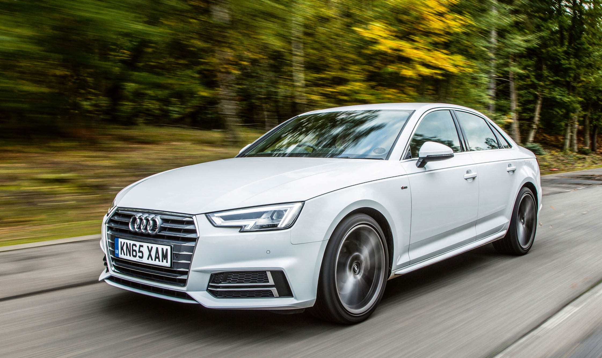
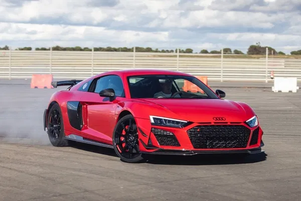
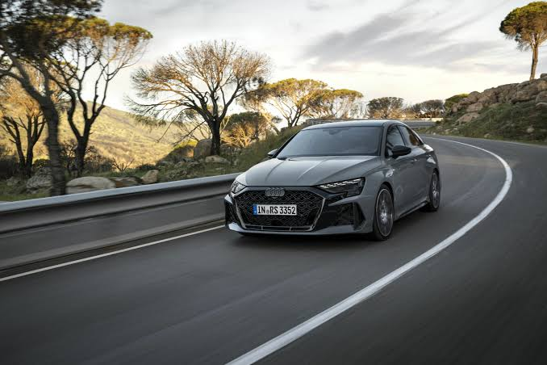

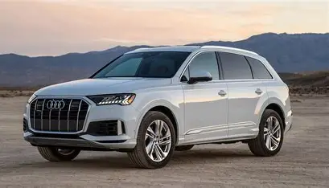
 Audi.
Now this… this is what happens when engineering meets architecture.
Because Audi doesn’t just build cars—it designs experiences. Clean lines, sharp edges, interiors that look like they were sketched by someone who refuses to tolerate clutter. It’s all very deliberate. Very precise.
Very… German.
But where BMW is about driving feel and Mercedes is about luxury, Audi positions itself somewhere else entirely:
Technology.
Quiet, confident, slightly futuristic technology.
Let’s start with the thing Audi practically built its identity on—quattro.
All-wheel drive, yes. But not the soft, safety-first kind. No, quattro is about grip in its purest form. Rain, dust, questionable surfaces—it doesn’t matter. You put your foot down, and the car just hooks up.
No drama. No hesitation.
Just traction.
And that defines the Audi driving experience.
It’s not playful like a rear-wheel-drive BMW. It doesn’t dance.
It deploys.
You go into a corner, get on the power early, and instead of the rear stepping out, the car grips harder—as if it’s daring you to push further. It builds confidence quickly… perhaps a bit too quickly.
Because Audi makes you feel like a better driver than you actually are.
Now let’s talk engines.
Audi loves turbocharging. TFSI, TDI—boost is everywhere. Smooth, efficient, deceptively quick. They don’t always shout about their performance, but it’s there, waiting.
And then you step into S and RS territory.
This is where the calm, composed Audi suddenly reveals a much darker personality.
RS cars are fast in a way that feels almost unfair. Launch control, all-wheel drive grip, turbocharged power—they don’t spin, they don’t struggle, they just go. It’s like being fired out of a machine designed specifically to ignore physics.
0–100? Over before you’ve fully processed what just happened.
And the sound? Sometimes understated… sometimes absolutely feral, depending on the engine.
But even then, Audi maintains composure. It never feels chaotic. It feels calculated.
That’s the theme.
Now step inside.
Because this is where Audi really separates itself.
Interiors that feel like they belong five years in the future. Virtual cockpits, clean dashboards, minimal buttons, high-resolution screens—it’s all crisp, sharp, almost surgical.
There’s a sense of control. Of clarity.
Nothing feels accidental.
And yet… some might say it’s almost too perfect.
Because while Audi excels at precision, it can sometimes lack that raw, emotional edge. It doesn’t always make your heart race the way a wild rear-wheel-drive car might.
But that’s not the point.
Audi isn’t trying to be wild.
It’s trying to be flawless.
And most of the time…
It gets very, very close.
Audi.
Now this… this is what happens when engineering meets architecture.
Because Audi doesn’t just build cars—it designs experiences. Clean lines, sharp edges, interiors that look like they were sketched by someone who refuses to tolerate clutter. It’s all very deliberate. Very precise.
Very… German.
But where BMW is about driving feel and Mercedes is about luxury, Audi positions itself somewhere else entirely:
Technology.
Quiet, confident, slightly futuristic technology.
Let’s start with the thing Audi practically built its identity on—quattro.
All-wheel drive, yes. But not the soft, safety-first kind. No, quattro is about grip in its purest form. Rain, dust, questionable surfaces—it doesn’t matter. You put your foot down, and the car just hooks up.
No drama. No hesitation.
Just traction.
And that defines the Audi driving experience.
It’s not playful like a rear-wheel-drive BMW. It doesn’t dance.
It deploys.
You go into a corner, get on the power early, and instead of the rear stepping out, the car grips harder—as if it’s daring you to push further. It builds confidence quickly… perhaps a bit too quickly.
Because Audi makes you feel like a better driver than you actually are.
Now let’s talk engines.
Audi loves turbocharging. TFSI, TDI—boost is everywhere. Smooth, efficient, deceptively quick. They don’t always shout about their performance, but it’s there, waiting.
And then you step into S and RS territory.
This is where the calm, composed Audi suddenly reveals a much darker personality.
RS cars are fast in a way that feels almost unfair. Launch control, all-wheel drive grip, turbocharged power—they don’t spin, they don’t struggle, they just go. It’s like being fired out of a machine designed specifically to ignore physics.
0–100? Over before you’ve fully processed what just happened.
And the sound? Sometimes understated… sometimes absolutely feral, depending on the engine.
But even then, Audi maintains composure. It never feels chaotic. It feels calculated.
That’s the theme.
Now step inside.
Because this is where Audi really separates itself.
Interiors that feel like they belong five years in the future. Virtual cockpits, clean dashboards, minimal buttons, high-resolution screens—it’s all crisp, sharp, almost surgical.
There’s a sense of control. Of clarity.
Nothing feels accidental.
And yet… some might say it’s almost too perfect.
Because while Audi excels at precision, it can sometimes lack that raw, emotional edge. It doesn’t always make your heart race the way a wild rear-wheel-drive car might.
But that’s not the point.
Audi isn’t trying to be wild.
It’s trying to be flawless.
And most of the time…
It gets very, very close.
Nissan
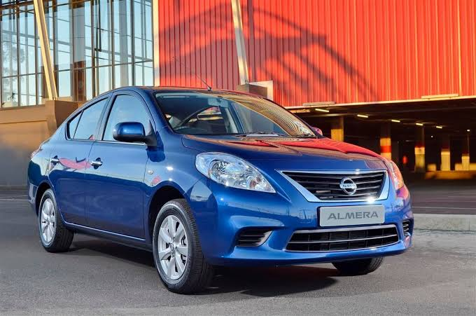
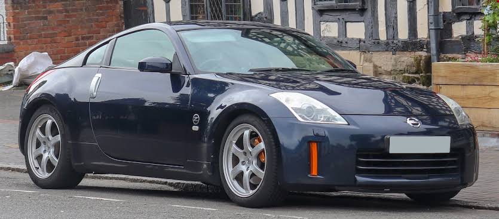

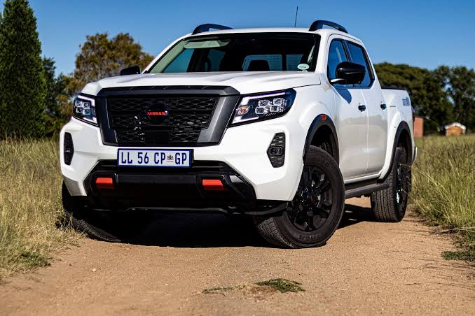
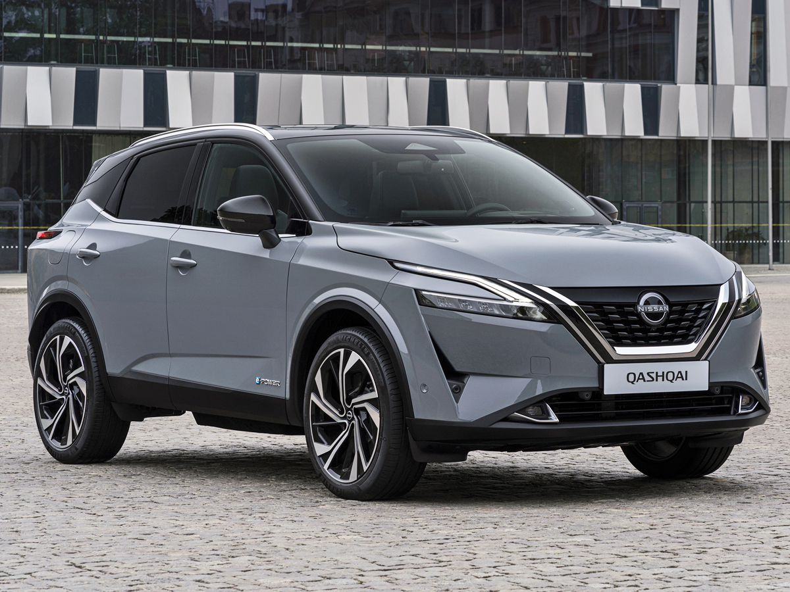
Nissan. Now here’s a brand that feels like two completely different personalities sharing the same body. On one side, you’ve got the sensible, everyday machines—cars that do their job, get people where they need to go, and don’t make a fuss about it. And on the other… Absolute icons. Let’s address the split. Because modern Nissan, in many ways, leans heavily into practicality. CVTs, fuel efficiency, comfort—cars designed for daily life, not late-night drives. They’re fine. They work. They exist. But then you look into Nissan’s past—and suddenly, everything changes. Because this is the company that gave us some of the most legendary performance cars ever built. Let’s start with the Skyline. More specifically—the GT-R. Now this isn’t just a car. It’s a statement. Nicknamed “Godzilla” for a reason, the GT-R doesn’t behave like a normal car. Twin-turbo V6, advanced all-wheel-drive system, technology that borders on obsessive—it’s engineered to dominate. You don’t casually drive a GT-R. You deploy it. Launch control engaged, foot down, and suddenly the world blurs. It grips, it pulls, it accelerates in a way that feels mechanical and ruthless. Less emotion, more execution. It doesn’t ask if you’re ready. It assumes you are. Then there’s the Z cars. The 350Z, 370Z, and now the new Z—rear-wheel-drive, naturally aspirated roots, balanced chassis. These are driver’s cars. Not overly complicated, not trying to be something they’re not. Just you, the engine, and the road. Simple. Effective. Fun. And that’s the thing about Nissan when it’s at its best—it understands enthusiasts. It knows how to build cars that connect with people who actually enjoy driving. But—and it’s a big but—the brand has struggled with consistency. For every exciting performance car, there’s a lineup of vehicles that feel… a bit uninspired. A bit too focused on ticking boxes rather than creating moments. And that’s where the frustration comes in. Because you know what Nissan is capable of. You’ve seen it. You’ve felt it. And when they tap into that potential—when they bring back that energy, that boldness—they create something special. Something memorable. Something worthy of the name. Because buried beneath the sensible exterior… Nissan still has that wild side. That part of it that built legends. And every now and then… It wakes up.
Mazda
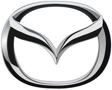
Mazda. Now this… this is a brand for people who get it. Not the spec-sheet warriors. Not the badge chasers. No—Mazda is for the ones who understand that driving isn’t about numbers. It’s about feeling. Because while everyone else was busy chasing horsepower, adding turbos, and turning cars into rolling computers, Mazda quietly stood in the corner and said: “What if we just made it… better to drive?” And thus—Jinba Ittai. Horse and rider. Car and driver. One. It sounds poetic. Slightly dramatic. But then you drive a Mazda… and suddenly, it makes perfect sense. Let’s start with the MX-5. Lightweight. Rear-wheel drive. Modest power. On paper? Nothing special. On the road? Everything. Because it’s not about how fast you go—it’s about how connected you feel while going there. The steering talks to you. The chassis moves with you. Every input you make is met with an immediate, honest response. No filters. No nonsense. Just pure, mechanical joy. And Mazda applies that philosophy across its lineup. Even their everyday cars—Mazda3, CX-5—feel more alive than they have any right to. Steering that actually communicates. Chassis tuning that encourages you to take the long way home. They care about the little things. Now let’s talk engines. Because Mazda… is weird. In the best possible way. While the entire industry rushed toward downsized turbo engines, Mazda said, “No thanks,” and doubled down on naturally aspirated efficiency—Skyactiv. High compression ratios. Clever engineering. Extracting performance and economy without relying on boost. It’s stubborn. It’s brilliant. And then—because they clearly enjoy confusing everyone—they brought back the rotary. Ah yes. The Wankel. An engine that doesn’t use pistons like a normal human being. Instead, it spins. Smooth, high-revving, compact—and notoriously… temperamental. But when it works? There’s nothing else like it. And that sums up Mazda perfectly. It’s not trying to win the numbers game. It’s trying to win your heart. And more often than not… It does.Subaru
Subaru. Or as the internet lovingly—and slightly questionably—calls it… “Subuwu.” Which is ironic, because there is absolutely nothing soft about what Subaru stands for. This is a brand built on grit. On mud, snow, gravel, and roads that most cars would politely refuse to acknowledge. Because Subaru doesn’t just build cars. It builds tools. Let’s start with the fundamentals: the boxer engine. Flat. Low. Opposed pistons punching sideways instead of up and down. It lowers the center of gravity, improves balance, and gives Subaru that distinctive rumble—uneven, raw, unmistakable. You hear it before you see it. Then—symmetrical all-wheel drive. Not just thrown in as an option. No, this is baked into the car’s DNA. Power distributed evenly, grip delivered consistently, traction you can rely on when conditions get… interesting. Rain? Fine. Gravel? Even better. Snow? That’s basically an invitation. And this is where Subaru shines. Because while other cars are built for perfect roads, Subaru builds for the real world. Now we get to the legends. WRX. STI. Rally heritage. These aren’t just cars—they’re echoes of dirt stages, flying gravel, anti-lag popping like distant thunder. Turbocharged punch, aggressive all-wheel-drive grip, and a driving experience that feels raw, unfiltered, slightly chaotic. It’s not refined. It’s not polished. But it’s alive. And that’s the appeal. You don’t drive a Subaru like you would a luxury car. You attack the road. You lean into the conditions. You embrace the imperfections. But Subaru isn’t just about performance. There’s a practicality here—Outbacks, Foresters—cars built for people who actually go places. Camping trips, mountain drives, bad weather, worse roads. They’re dependable. Honest. Tough. And yes… sometimes a bit rough around the edges. But that’s part of the charm. Because a Subaru doesn’t pretend to be something it’s not. It knows exactly what it is. Capable. Durable. Slightly rebellious. And always ready for whatever the road—or lack of one—throws at it.
Koenigsegg
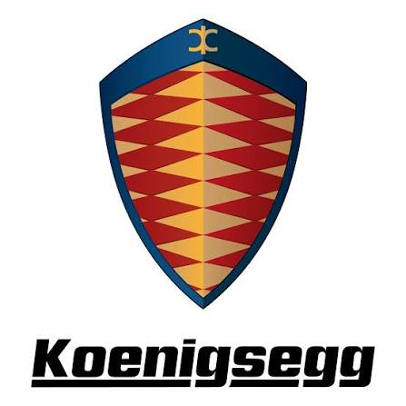
Koenigsegg. Ah. Now we leave reality. And enter the mind of a man who looked at the laws of physics and said: “I think I can do better.” Christian von Koenigsegg. The mad scientist. The visionary. The man who decided that building some of the fastest, most advanced cars on Earth in a small Swedish workshop was a perfectly reasonable life decision. And somehow… He was right. Because Koenigsegg doesn’t follow the rules of the automotive world. It rewrites them. Let’s talk engineering. Everything—everything—is pushed to the absolute limit. Engines producing absurd amounts of power. Lightweight carbon fiber construction taken to extremes. Aerodynamics so advanced they look like they belong on a spacecraft rather than a car. And then… they go further. Freevalve technology—no camshafts. Individual valve control. An engine that breathes like it’s alive, adapting in real time. Direct Drive systems—removing the traditional gearbox entirely, because apparently even that was too conventional. This is not evolution. This is revolution. Now, performance. Numbers that don’t just impress—they confuse. 0–400–0 km/h records. Acceleration that feels less like driving and more like being launched. Speeds that make your brain question whether this is still happening on Earth. And yet—despite all this madness—there’s precision. Control. A sense that every insane figure, every outrageous innovation, has been meticulously engineered to work perfectly. Koenigsegg cars aren’t chaotic. They’re calculated insanity. And then there’s the design. Dihedral synchro-helix doors—because normal doors are apparently too boring. Interiors that blend minimalism with aerospace-level craftsmanship. Every detail feels intentional, futuristic, almost unreal. These cars don’t look like they belong in traffic. They look like they escaped from the future. And that’s the thing about Koenigsegg. It’s not trying to compete. It’s trying to transcend. To push boundaries so far that everyone else is forced to rethink what’s possible. Because in a world where most manufacturers play within limits… Koenigsegg simply removes them. And builds anyway. Mad? Absolutely. Brilliant? Without question.Ferarri
 Ferrari.
Or, as it should properly be said—
Rari.
Now this isn’t just a car brand.
This is theatre.
Because Ferrari doesn’t build cars to be sensible, or practical, or even particularly logical.
Ferrari builds emotion.
Let’s start with the engine.
V8. V12. Naturally aspirated masterpieces that don’t just produce power—they produce music. High-revving, razor-sharp, screaming all the way to redline like they’ve got something to prove.
You don’t hear a Ferrari.
You experience it.
It rises, it builds, it explodes into this mechanical symphony that makes every other car sound like it’s clearing its throat.
And the response? Instant.
No hesitation. No softness. You touch the throttle, and the car reacts like it’s been waiting for you its entire life.
Because it probably has.
Now, performance.
Ferrari doesn’t chase numbers—it defines them.
Acceleration that pins you back, cornering that feels almost supernatural, braking that makes you question how physics is still cooperating. Everything is tuned, sharpened, perfected for one purpose:
Speed.
But not just speed—
Drama.
Because a Ferrari isn’t content with simply being fast.
It wants you to feel fast.
Steering that’s alive in your hands. A chassis that dances right on the edge of control. Slightly intimidating. Slightly unpredictable. Always exciting.
It demands respect.
And if you give it that?
It rewards you with one of the most engaging driving experiences on Earth.
Now let’s talk design.
Because Ferrari doesn’t do subtle.
Every line, every curve, every vent—it all serves a purpose, but it also tells a story. Aggressive yet elegant. Sculpted like it’s in motion even when it’s standing still.
It’s art.
Rolling, roaring, ridiculously fast art.
And then… there’s the badge.
That prancing horse.
It means something.
Racing heritage. Formula 1 dominance. Decades of pushing limits on tracks around the world. When you drive a Ferrari, you’re not just driving a car—you’re stepping into a legacy.
But—and this is important—Ferrari isn’t always easy.
It can be temperamental. Demanding. Occasionally dramatic in ways that extend beyond just driving.
But that’s the point.
A Ferrari isn’t meant to be perfect.
It’s meant to be passionate.
Flawed. Intense. Alive.
Because at the end of the day, a Ferrari doesn’t just take you somewhere.
It makes sure you feel everything along the way.
Ferrari.
Or, as it should properly be said—
Rari.
Now this isn’t just a car brand.
This is theatre.
Because Ferrari doesn’t build cars to be sensible, or practical, or even particularly logical.
Ferrari builds emotion.
Let’s start with the engine.
V8. V12. Naturally aspirated masterpieces that don’t just produce power—they produce music. High-revving, razor-sharp, screaming all the way to redline like they’ve got something to prove.
You don’t hear a Ferrari.
You experience it.
It rises, it builds, it explodes into this mechanical symphony that makes every other car sound like it’s clearing its throat.
And the response? Instant.
No hesitation. No softness. You touch the throttle, and the car reacts like it’s been waiting for you its entire life.
Because it probably has.
Now, performance.
Ferrari doesn’t chase numbers—it defines them.
Acceleration that pins you back, cornering that feels almost supernatural, braking that makes you question how physics is still cooperating. Everything is tuned, sharpened, perfected for one purpose:
Speed.
But not just speed—
Drama.
Because a Ferrari isn’t content with simply being fast.
It wants you to feel fast.
Steering that’s alive in your hands. A chassis that dances right on the edge of control. Slightly intimidating. Slightly unpredictable. Always exciting.
It demands respect.
And if you give it that?
It rewards you with one of the most engaging driving experiences on Earth.
Now let’s talk design.
Because Ferrari doesn’t do subtle.
Every line, every curve, every vent—it all serves a purpose, but it also tells a story. Aggressive yet elegant. Sculpted like it’s in motion even when it’s standing still.
It’s art.
Rolling, roaring, ridiculously fast art.
And then… there’s the badge.
That prancing horse.
It means something.
Racing heritage. Formula 1 dominance. Decades of pushing limits on tracks around the world. When you drive a Ferrari, you’re not just driving a car—you’re stepping into a legacy.
But—and this is important—Ferrari isn’t always easy.
It can be temperamental. Demanding. Occasionally dramatic in ways that extend beyond just driving.
But that’s the point.
A Ferrari isn’t meant to be perfect.
It’s meant to be passionate.
Flawed. Intense. Alive.
Because at the end of the day, a Ferrari doesn’t just take you somewhere.
It makes sure you feel everything along the way.
Bentley
Bentley. Now… after all that noise, all that chaos, all that screaming Italian drama— Bentley walks in. Quietly. Closes the door. And suddenly… everything slows down. Because Bentley isn’t about speed in the way Ferrari is. It’s about effortless power. Understated dominance. The kind of presence that doesn’t need to shout—because it already owns the room. Let’s begin with the experience. You don’t “get into” a Bentley. You arrive in it. The doors open with weight. The cabin greets you with leather so soft it feels almost unnecessary, wood trims polished to perfection, metal accents that feel cold, solid, real. This isn’t just luxury. It’s craftsmanship. Hand-built interiors where every stitch, every surface, every detail has been considered. Not rushed. Not mass-produced in spirit, even if it technically is. Now, the drive. Bentley doesn’t rush. It glides. Massive engines—W12s, V8s—producing immense power, but delivering it in the smoothest, most composed way imaginable. You press the throttle, and instead of being thrown back violently, you’re carried forward with authority. Effortless. Like the car is saying, “We could go much faster… but there’s no need to prove it.” And yet—make no mistake—it’s fast. Ridiculously fast. A Bentley can move in ways that completely contradict its size and weight. It corners flatter than it should, accelerates harder than expected, and maintains composure through it all. But it never feels aggressive. Never frantic. Always… controlled. That’s the difference. Where other performance cars demand your attention, Bentley reassures you. Where others shout, Bentley speaks in a calm, confident tone—and somehow commands even more respect because of it. Now, identity. Bentley sits in a unique space. Not as flashy as a supercar. Not as restrained as a traditional luxury saloon. It’s the middle ground between performance and opulence. A car for someone who appreciates speed—but values comfort just as much. Who wants power—but delivered with elegance. Because a Bentley isn’t about proving something to others. It’s about knowing something yourself. That you’ve arrived. Not just at your destination— But at a certain level of life. And the car? It simply reflects that.